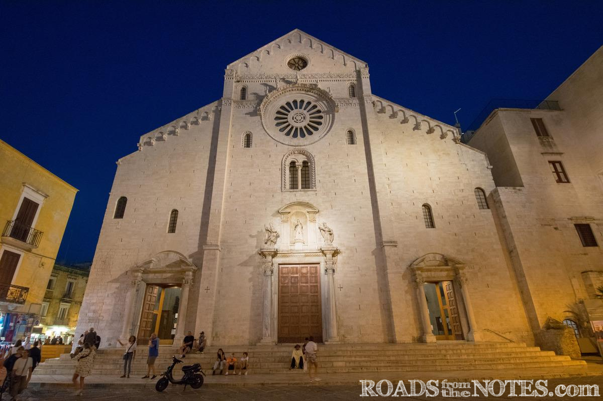

БАРИ - ИТАЛИЯ
"Senatus Populusque Romanus"

- Забележителности:
- В Стария град
- В Новия град
- Туристически забележителности близо до града
1. Катедрала "Свети Сабино" (Cattedrale di San Sabino): Това е една от най-важните религиозни сгради в Бари. Катедралата е посветена на Свети Сабино и е впечатляващ пример за романска архитектура. Вътрешността на катедралата е богато украсена с мозайки и стъклени прозорци.
2. Крепост "Свети Светики" (Castello Svevo): Тази впечатляваща крепост е построена през 12 век от норманните властелини. Тя се издига върху морските скали и представлява важна икономическа и военна структура в историята на Бари. Днес крепостта е дом на музей, където можеш да откриеш исторически артефакти и изложби.
3. Бари Археологически музей (Museo Archeologico di Bari): Този музей предлага посетителите да се запознаят с богатата археологическа история на региона. Можеш да разгледаш колекции от древни артефакти, включително гробници, керамика и статуи от различни епохи.
 4. Базилика "Свети Никола" (Basilica di San
Nicola): Тази красива базилика е посветена на свети
Никола, покровител на Бари. Той е един от най-важните светци в икономията на католическата църква и базиликата е паломническо
място за много християни. Вътрешността на базиликата е
впечатляваща със своите мозаики и реликвии.
4. Базилика "Свети Никола" (Basilica di San
Nicola): Тази красива базилика е посветена на свети
Никола, покровител на Бари. Той е един от най-важните светци в икономията на католическата църква и базиликата е паломническо
място за много християни. Вътрешността на базиликата е
впечатляваща със своите мозаики и реликвии.5. Къща на Петрус Нобили (Casa di Petruzzelli): Тази изящна ренесансова къща е считана за един от най-красивите домове в Бари. Тя е разположена в близост до катедралата и представлява пример за аристократична архитектура. В момента къщата се използва като галерия и се предлагат изложби на съвременно изкуство.
.jpg)